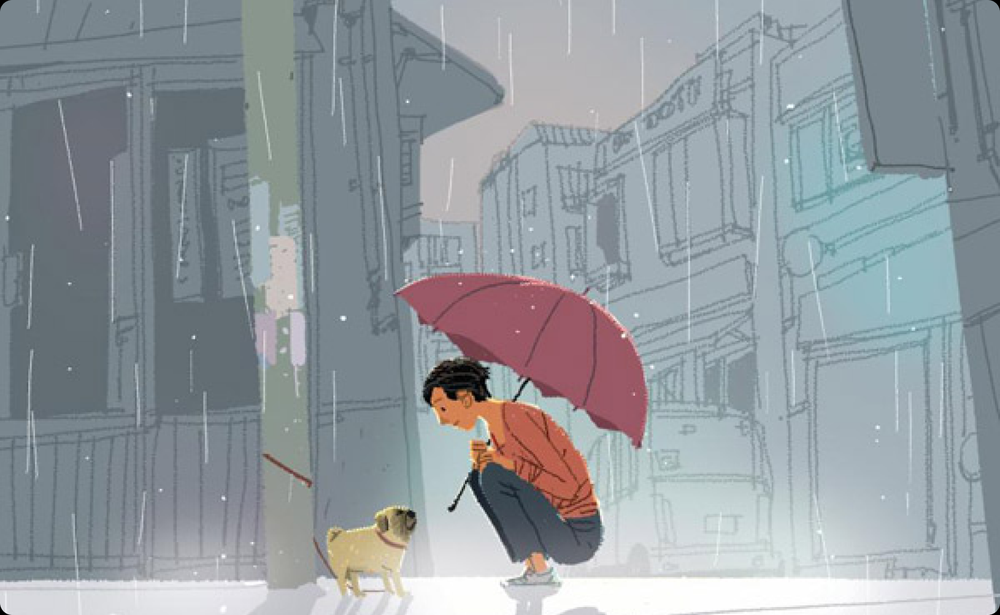

STREET FRIENDS 소개

저희 스트릿 프렌즈 웹사이트는 많은 동물들이 주인을 잃어버리거나 주인에게 버려지면서 갈 곳 없이 길거리를 떠돌아다니는 개 또는 고양이들을 쉽게 볼 수 있게 되었고 유기견 보호소에서도 머물 수 있는 기간이 짧고 최악의 경우에는 안락사를 시킵니다. 또 위험한 차도를 건너기 위해 목숨을 걸고 최악의 경우에는 차에 치이거나 차에 깔려 평평한 종잇장같이 되어 도로에서 자주 발견됩니다. 이러한 상황들이 너무 안타깝고 마음이 좋지 않았으며 슬펐습니다. 반려동물을 키우는 입장에서 그 많은 유기견들이 상처를 극복하고 좋은 주인을 만났으면 좋겠다는 마음에서 이 웹사이트를 제작해야겠다고 생각하게 되었습니다.